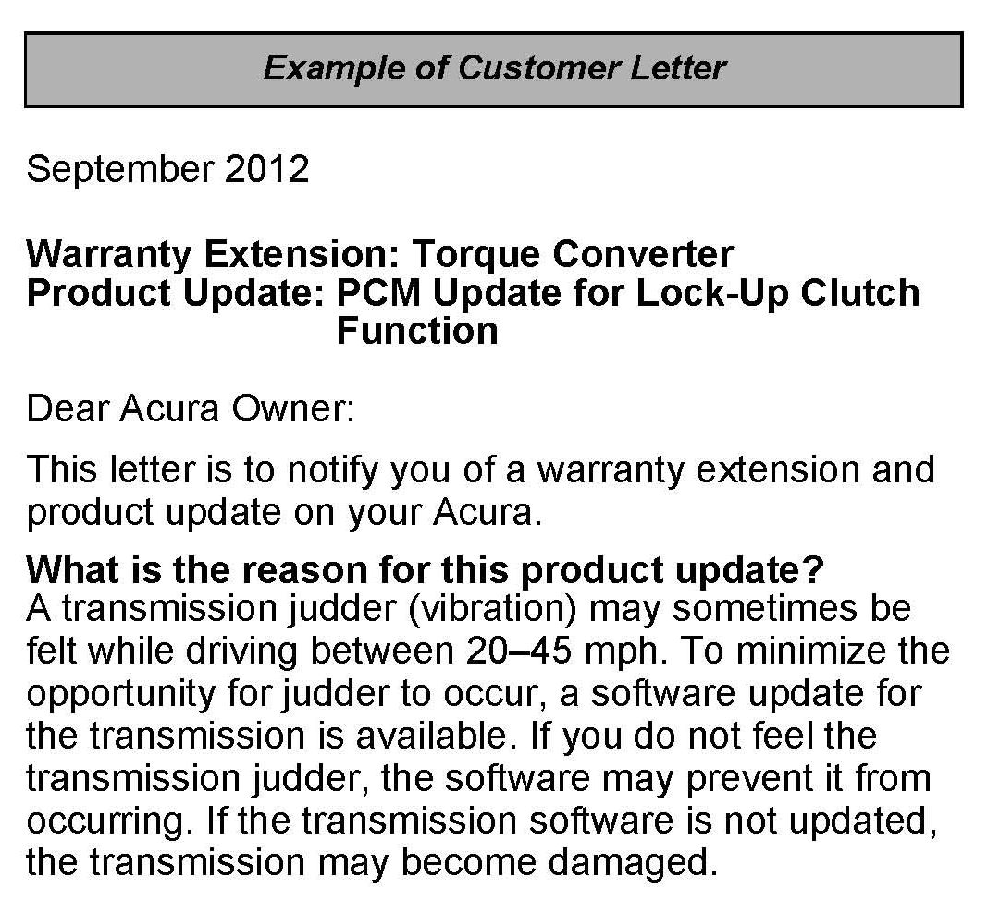
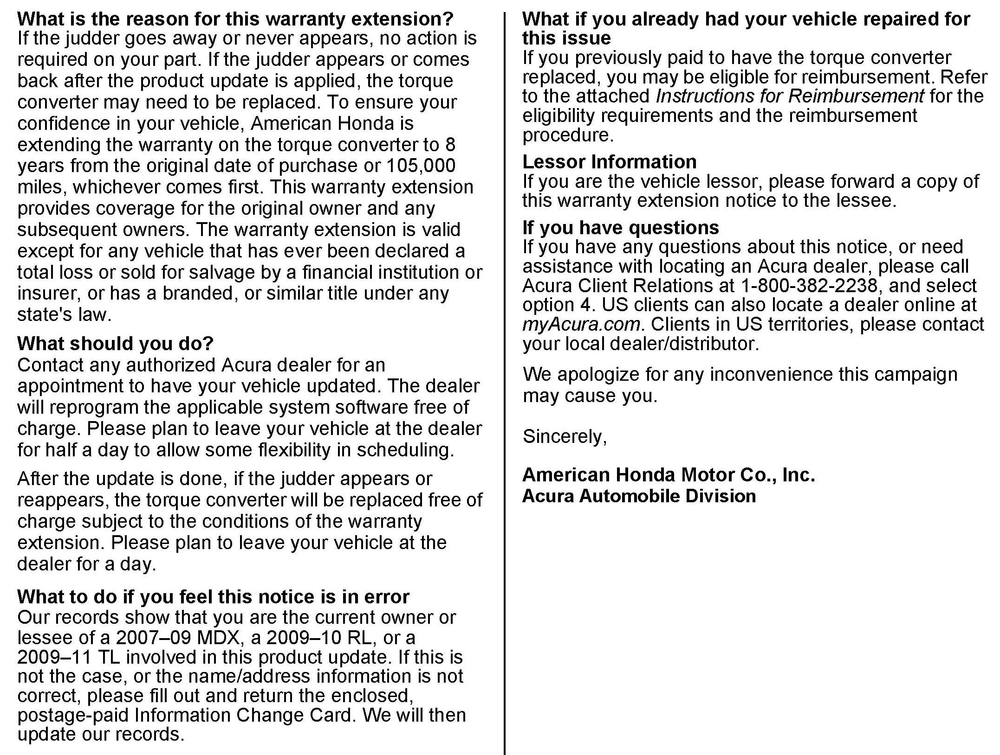
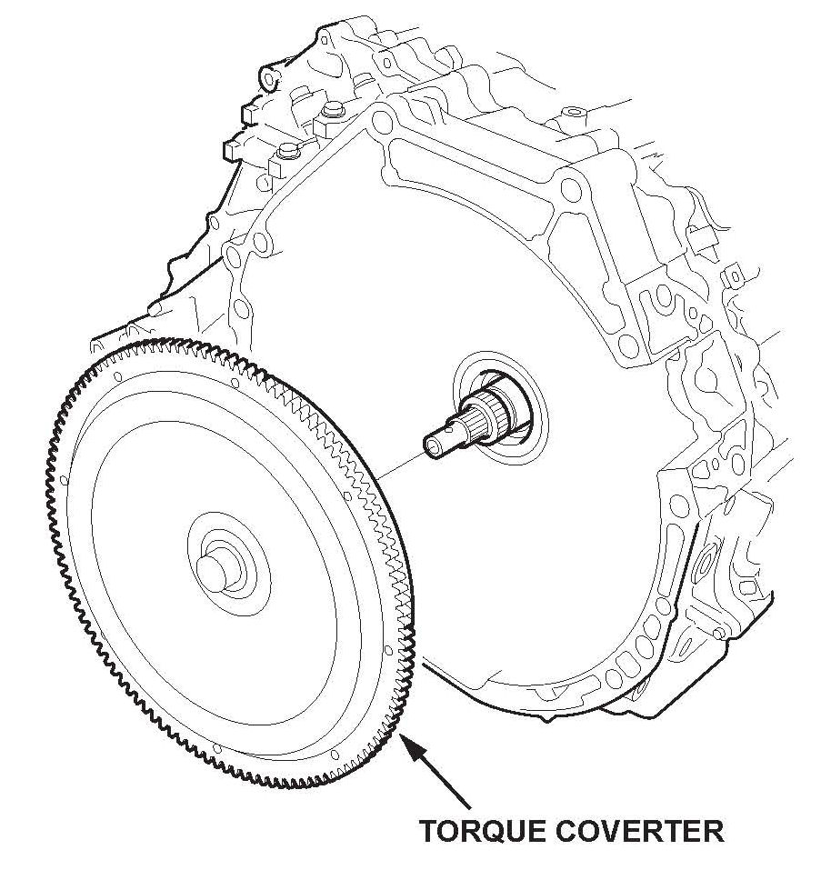

Campaign - ECM Update For A/T Lock-Up Function
12-029October 19, 2012
Applies To:
2007-09 MDX - Check the iN VIN status for eligibility
2009-10 RL - Check the iN VIN status for eligibility
2009-11 TL with SH-AWD - Check the iN VIN status for eligibility
Warranty Extension: Torque Converter
Product Update: PCM Update for Lock-Up Clutch Function
(Supersedes 12-029, dated August 21, 2012, to revise the information marked by the asterisks.)
*REVISION SUMMARY
Under BACKGROUND, information was added.*
BACKGROUND
Product Update: PCM Update for Lock-Up Clutch Function
*A judder from the torque converter lock-up clutch may be felt while driving between 20-45 mph. To minimize the opportunity for the judder to occur, a software update for the transmission is available. This software update is available free of charge to all affected vehicles regardless of its age or mileage.*
Warranty Extension: Torque Converter
If the judder returns after the transmission software is updated, the torque converter may need to be replaced. To increase customer confidence, American Honda is extending the warranty on the torque converter in affected vehicles to 8 years from the original date of purchase or 105,000 miles, whichever comes first.
The warranty extension does not apply to any vehicle that has ever been declared a total loss or sold for salvage by a financial institution or insurer, or has a branded or similar title under any state's law.
CLIENT NOTIFICATION


Owners of affected vehicles will receive a notification of this campaign in September 2012. An example of the client notification is included at the end of this service bulletin.
Do an iN VIN status inquiry to make sure the vehicle is shown as eligible.
Some vehicles affected by this campaign may be in your used vehicle inventory. These vehicles must be repaired before they are sold.
CORRECTIVE ACTION
Update the AT software (MDX models) or the PGM-FI software (RL and TL models) with the HDS. If the judder returns after the software is updated, replace the torque converter.
NOTE:
Tech Line review and DPSM approval is needed to replace the torque converter. Warranty claims submitted without approval may be subject to debit.
WARRANTY CLAIM INFORMATION
Operation Number: 1255C0
Flat Rate Time: 0.2 hour
Failed Part: 37820-RYE-A62
Defect Code: 5TUOO
Symptom Code: S4900
Skill Level: Repair Technician
SOFTWARE INFORMATION
NOTE:
Unnecessary or incorrect repairs resulting from a failure to update the HDS or MVCI are not covered under warranty.
MVCI Control Module (CM) Update:
Application Version 2.18.04 or later
Database update 04-JUL-2012
HDS Software Version:
3.005.007 or later
Before beginning the repair, make sure that both the HDS and MVCI are updated as listed above.
Do only the update listed in this service bulletin.
Check that the MVCI indicates the applicable program
ID listed below (or a later program ID) as the
Recommended Update when the update begins.
If the MVCI displays This vehicle does not need an update at this time during the update, the software for this service bulletin is already installed.
For more information about updating the HDS, the MVCI, and vehicle systems, refer to Service Bulletin 01-023, Updating Control Units/Modules.
REPAIR PROCEDURE - SOFTWARE UPDATE
1. Update the vehicle's software.
MDX models:
Update the AT software with the HDS. Refer to Service Bulletin 01-026, Updating Control Units/ Modules.
RL and TL models:
Update the PGM-FI software with the HDS. Refer to Service Bulletin 01-026, Updating Control Units/ Modules.
2. Return the vehicle to the client. If the vehicle comes back with the client indicating there is a judder, go to REPAIR PROCEDURE - TORQUE CONVERTER.
REPAIR PROCEDURE - TORQUE CONVERTER
1. Before you replace the torque converter, you must capture a snapshot of the client's symptom, and forward it to Tech Line for review.
NOTE:
Torque converters replaced without Tech Line's review will be subject to debit.
For more information about capturing a snapshot, refer to the following:
^ Torque Converter Clutch Shudder and Vibration Job Aid
^ Tech2Tech segment: Interpreting Torque Converter Judder Snapshot Data
For more information about how to send the snapshot to Tech Line, refer to the ServiceNews article titled Can't Send HDS Files to Tech Line? Check Out This Work-Around.
2. Call Tech Line to discuss the snapshot. If the snapshot indicates a replacement torque converter is needed, Tech Line will advise you to replace it and give you a reference number.
3. Contact your DPSM for approval. Make sure you have the reference number available in case the DPSM wants to contact Tech Line.

4. After receiving DPSM approval, refer to the applicable service manual or online using keywords TRANSMISSION REMOVAL to remove the transmission assembly, and replace the torque converter.

Disclaimer